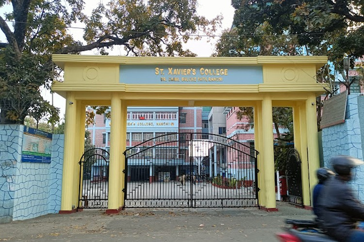

05. Education

Master of Computer Applications
Birla Institute of Technology, MesraAug 2024 - Jun 2026 (Expected)
CGPA: 7.37
Data Structures, DBMS, Big Data Analytics, Cloud Computing

Bachelor of Science in Statistics
St. Xavier's College, RanchiJul 2019 - Jul 2022
CGPA: 6.94
Probability, Regression Analysis, Linear Algebra, Hypothesis Testing
Certifications & Achievements
GATE 2024 Qualified (Data Science & AI)
Oracle Cloud Infrastructure 2025 - Data Science Professional
NPTEL - Python for Data Science
HuggingFace NLP Course
MLOps Specialization - DeepLearning.AI
Core Member, BITOTSAV